fis-plus【01】——前端开发环境配置
前端自动化工具确实给前端同学带来的极大的方便，这一篇中我们将通过介绍fis-plus来配置前端的开发环境。
av8d,请坐好哦~
一、fis-plus引入
fis-plus能够把前端当做整个PHP的开发环境来渲染，包括它能对smarty的开发环境能够很好的支持。
官网网站：
fis-plus
首先我们进行安装
在命令行输入：npm install -g fis-plus
如果你在安装过程中遇到网络问题，安装不成功，你可以通过淘宝镜像进行安装。
淘宝镜像安装教程参照：
[http://npm.taobao.org/]
安装完cnpm，之后执行 cnpm install -g fis-plus
查看是否安装成功：
在命令行输入： fisp -v
如有下图所示，则表示成功：
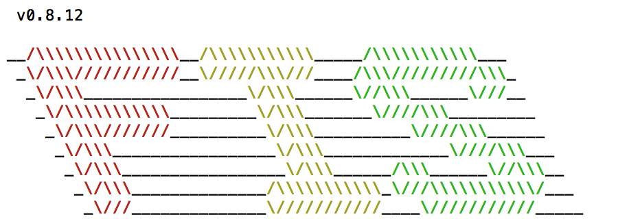
在fisp的官网首页，我们看到fisp提供能很完善的解决方案，这个比gulp或是grunt都要来的出色。在平时，如果要写这些PHP smaty的解决方案，是需要花费很大成本的，现在通过fisp来节约我们的开发和优化时间。
注释: smarty是一个使用PHP写出来的模板PHP模板引擎，它提供了逻辑与外在内容的分离，简单的讲，目的就是要使用PHP程序员同美工分离,使用的程序员改变程序的逻辑内容不会影响到美工的页面设计，美工重新修改页面不会影响到程序的程序逻辑，这在多人合作的项目中显的尤为重要。
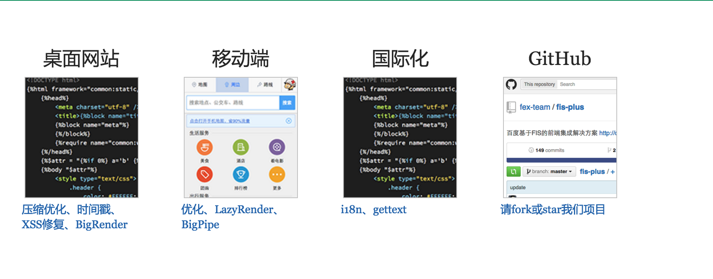
二、fis-plus是做什么的？
FIS-PLUS 是基于 FIS，应用于后端是 PHP，模板是 Smarty 的场景,是扩展自FIS的前端集成解决方案。其提供 后端框架、前端框架、自动化工具、辅助开发工具等开发套件。
在安装fis-plus之前，fis-plus对环境有要求：
- （1）安装node ,>=0.8.0的版本；
- （2）jre版本，>=1.5.0,用于本地调式
- （3）php-cgi版本，>=5.0.0，用于本地调式
说一下php-cgi的安装，这里我们通过Brew来安装，
首先你需要安装brew,官网：homebrew。
在命令行输入：
/usr/bin/ruby -e "$(curl -fsSL https://raw.githubusercontent.com/Homebrew/install/master/install)"进行安装。
安装成功之后，在命令行输入：brew install php55 --with-cgi安装php-cgi。
上面的三个环境都安装完成之后，我们在命令行输入：
fisp server start你就能看到如下结果，这时会启动fisp 的调式服务器。
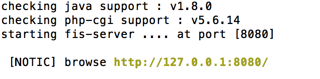
浏览器也会打开：
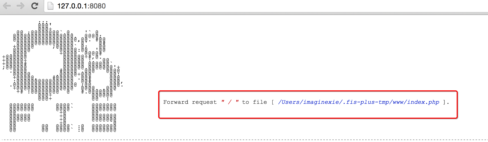
在上图，你可以看到这个目录的路径。
现在我们进入到这个文件夹中 cd /Users/imaginexie/.fis-plus-tmp/www
然后看一下这个目录下有什么文件：dir，然后打开这个目录open .
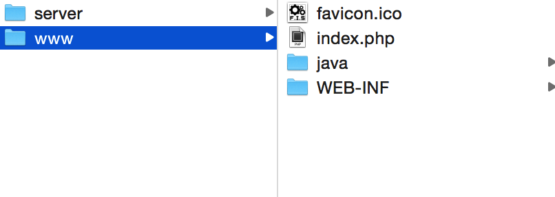
当然啦~这个目录只是本地server目录，但是其实，当我们在线上开发的时候，我们有一个真正的server。
fis-plus支持把线下（本地）的资源直接放到线上。
2.1、lights
说道这里，你是不是睡着了？？？让你睡~
lights 是 fis 提供的包管理工具，托管了 fis 所有资源。是使用 fis 的时候，必不可少的利器。
首先我们安装lights:npm install -g lights
然后下载一个PC端案例：我们在桌面上安装 lights install pc-demo
安装成功之后，你的桌面上会出现一个pc-demo的文件夹。
OK，现在我们来打开这个pc-demo目录，看看它都包含了哪些东西。
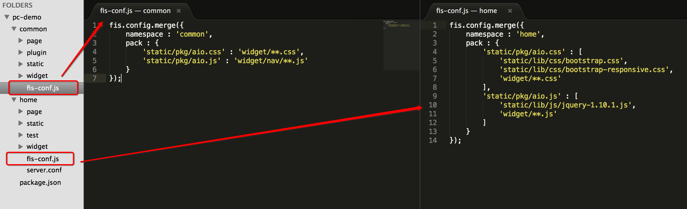
在这个文件夹中，我们看到，common和home目录下都有一个fis-conf.js配置文件。
在common（common文件夹是所有静态资源的结合）的fis-conf.js中我们看到：
配置文件对css和js进行了打包（pack），打包到了static/pkg这个目录下。
home目录下也是同理。
然后我们再看看home目录下，page/index.tpl这个模板文件：
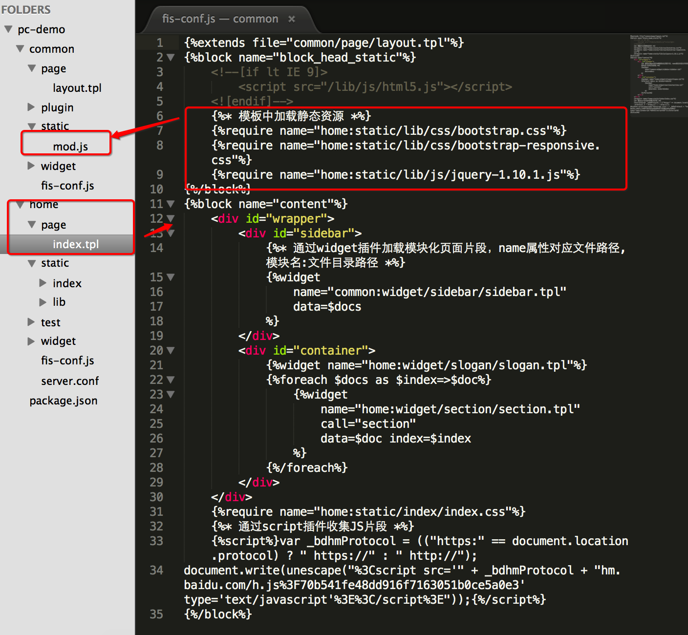
我们看到这里面使用了require对静态资源进行加载。这个require模块加载主要用到的是fis自己写的mod.js，它也是一个类似于require.js或sea.js的模块化脚本。mod.js属于cmd规范。这个源码理解起来不然，你可以看下，因为mod.js主要是用来加载资源的。
然后我们再来看下common/page/layout.tpl
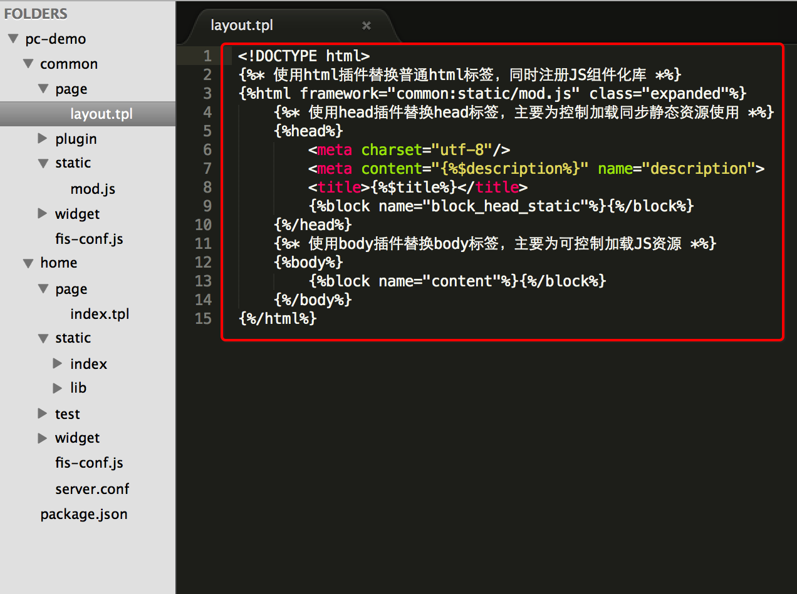
page其实主要是用来组装widge文件下的widget组件。只是对页面进行渲染，而不负责输出。
再来看下package.json这个文件：
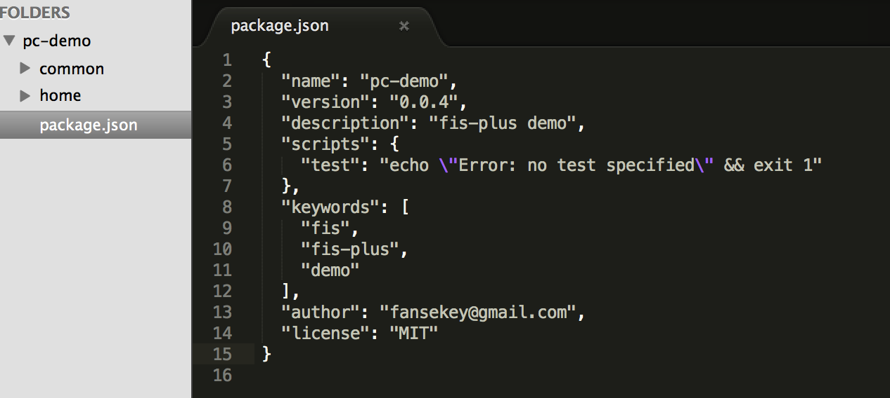
这些文件在编译的时候会编译成smaty对应的文件夹，以及一个静态的文件夹。
现在我们来发布这个PC-demo。
在pc-demo目录下，命令行分别输入fisp release -r common
fisp release -r home，即，对common和home这两个目录进行发布（release）。
发布完成之后，命令行输入：fisp server start来启动服务器。
这个时候我们在浏览器上看到的还是这个：
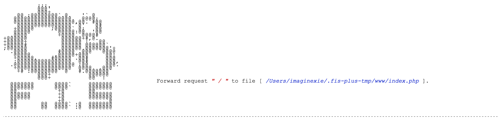
你可能会疑惑，怎么啥变化没有呀？？？
hold住~我们进入到pc-demo 的www目录下查看下发生了什么：
cd /Users/imaginexie/.fis-plus-tmp/www
我们看到如下：
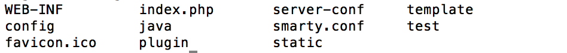
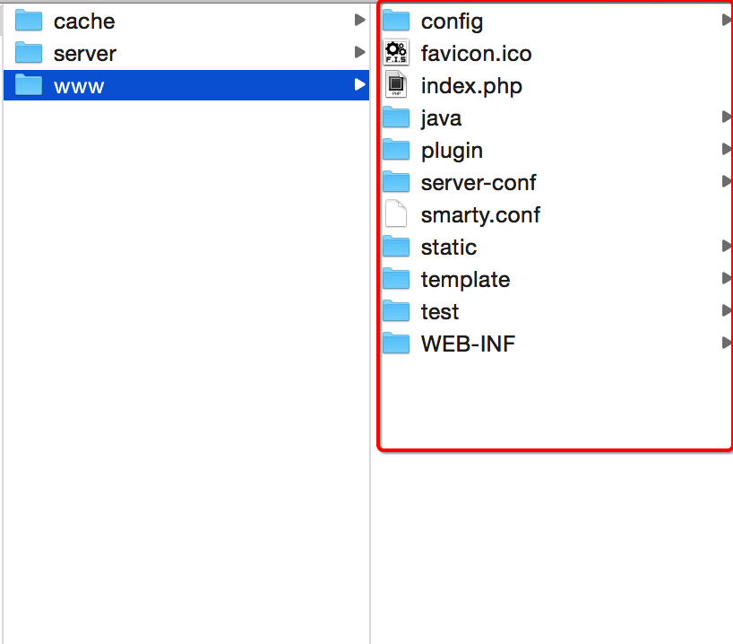
这些文件把我们前端的东西都打包了过来。对比之前我们在进行fisp server start的时候，是不是发生了很大的变化。
这里生成了一个static文件夹，对应生成了common和home目录。如图：
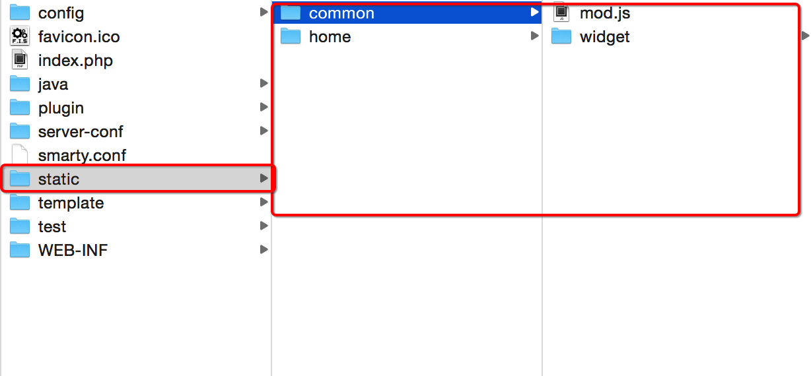
啊哈~马上要大功告成啦~感动啊
现在，我们把www这个文件夹拽到sublime中。然后对默认的首页index.php进行重命名：index_w.php。即> 把默认的首页去除。
然后，我们在命令行输入
cd ..先退出www目录，返回到上级，然后执行fisp server init初始化模拟线上环境。
我们再到浏览器来刷新一下 127.0.0.1:8080。这个时候你会看到：
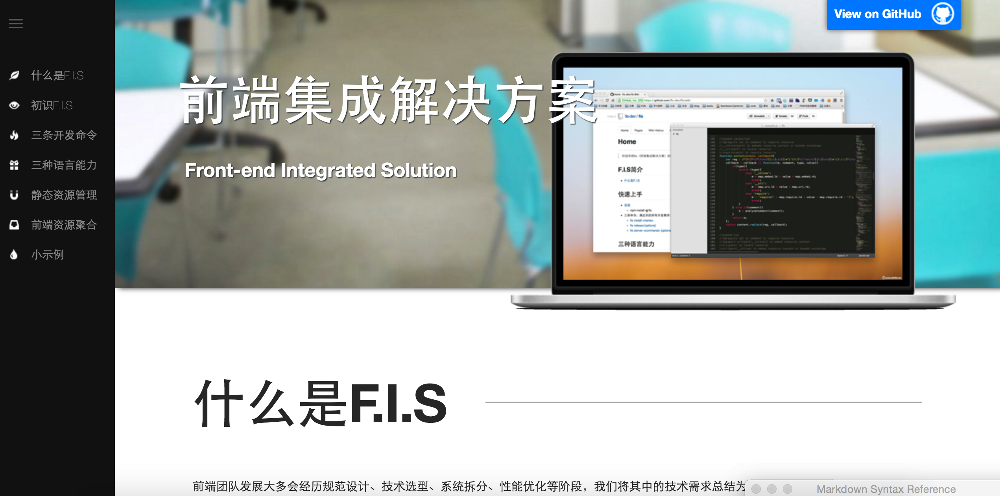
这就是fis给我提供的pc-demo的网站。
下面我们来了解下fis-plus发布（release）的时候用到的命令。
输入fisp release -h可以看到fis-plus release为我们提供了如下：
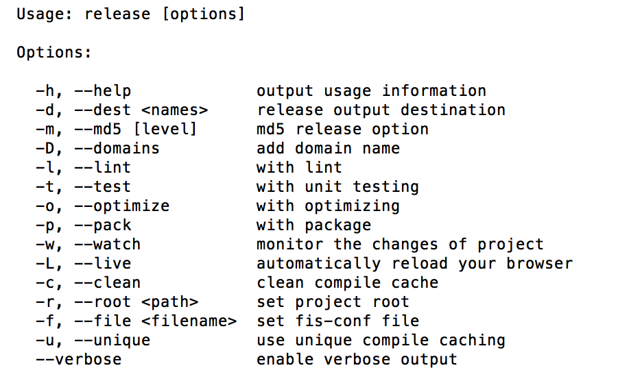
其中，都做了详细的解释。你可以按着上面的命令选项进行尝试，同时这些命令可以同时组合使用，例如fisp release -Domupld。
Ok ,以上是关于fis-plus在前端开发中得环境配置，但是我们还需要配置后端的开发环境，下一节我们将深入> 讲解fis-plus和后端的环境配置。